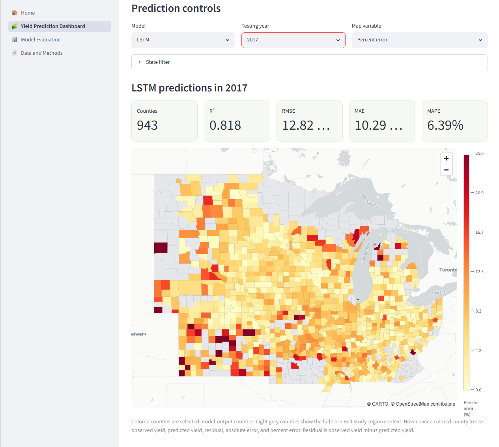
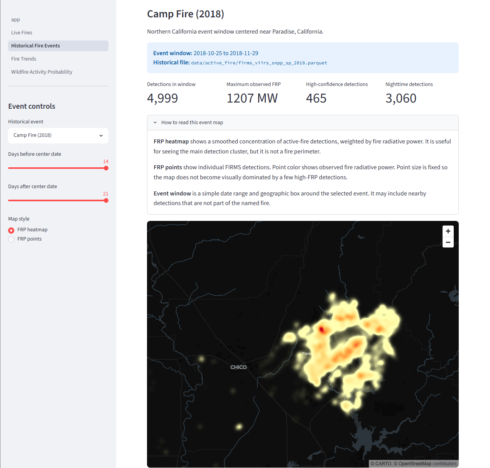

Crop yield prediction
I compare deep learning models for county-level corn yield prediction across the U.S. Corn Belt.
Data science · Geospatial AI · Climate and agriculture
I work on machine learning for environmental and agricultural problems, especially crop yield prediction, wildfire hazard modeling, climate data, and spatial analysis.
I compare deep learning models for county-level corn yield prediction across the U.S. Corn Belt.
I work with spatial fire-risk data and machine learning outputs to understand wildfire hazard patterns and model behavior.
I study how models respond to heat, drought, wet years, wildfire conditions, and compound environmental stress.
I build map-based tools that make environmental model outputs easier to inspect, compare, and explain.
Crop yield
I am analyzing how corn yield prediction models behave under extreme weather conditions, including heat, drought, wet years, and compound climate stress. This work focuses on model robustness, error patterns, and how different model types respond to rare events.
Wildfire
I am also working on wildfire prediction and hazard mapping. This project uses spatial data and machine learning outputs to understand wildfire risk patterns and support clearer map-based model interpretation.

Crop yield
A Streamlit dashboard for viewing observed yield, predicted yield, residuals, absolute error, and percent error across Corn Belt counties. It compares PatchTST, LSTM, and GRU outputs for testing years 2017–2020.

Wildfire
A Streamlit dashboard for exploring wildfire hazard prediction outputs, spatial risk patterns, county-level results, and model evaluation.
Published paper
This paper compares PatchTST, LSTM, and GRU for county-level corn yield prediction and studies model sensitivity to heat, drought, wetness, and compound extreme-weather events.
The easiest way to reach me is by email. I am also on GitHub.